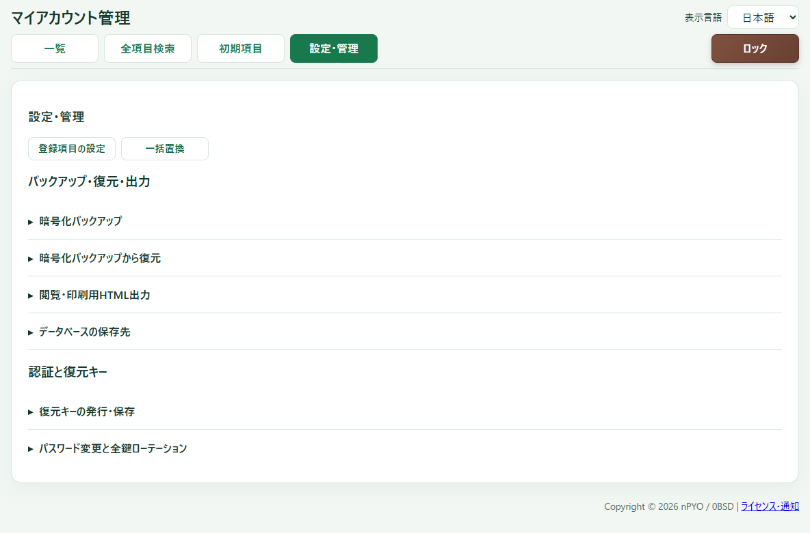
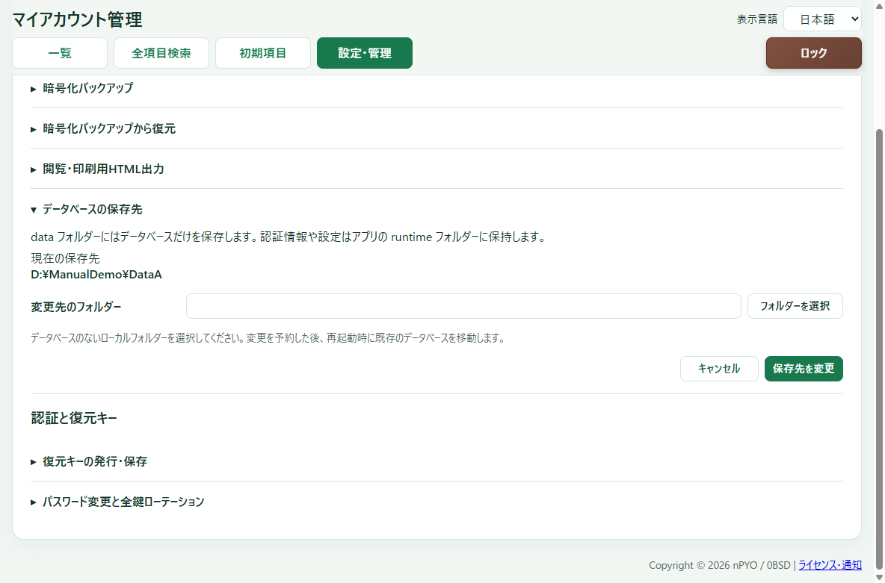
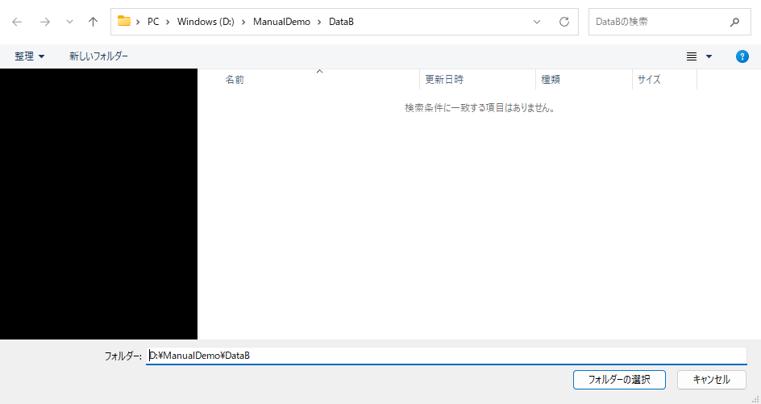
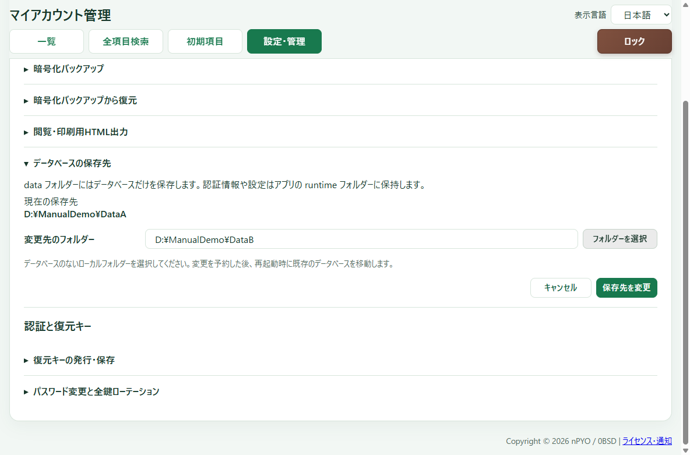
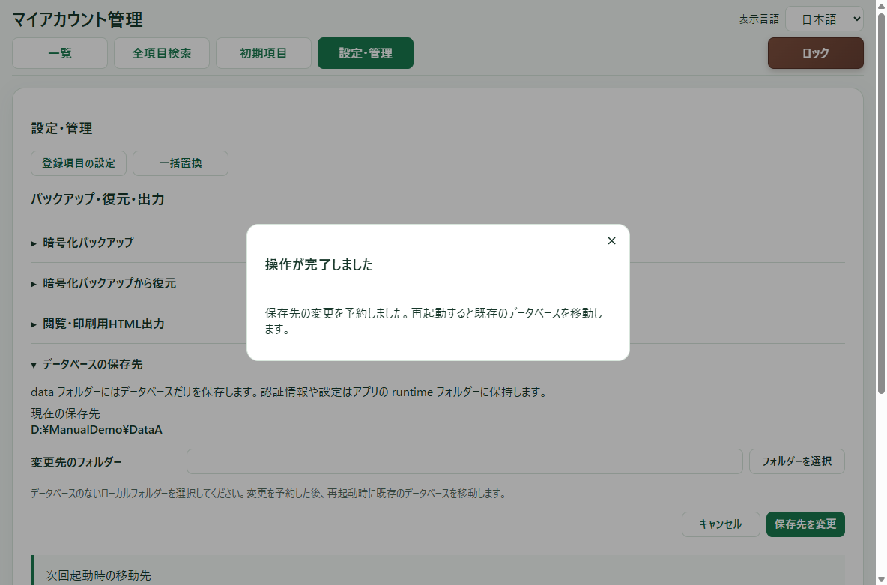
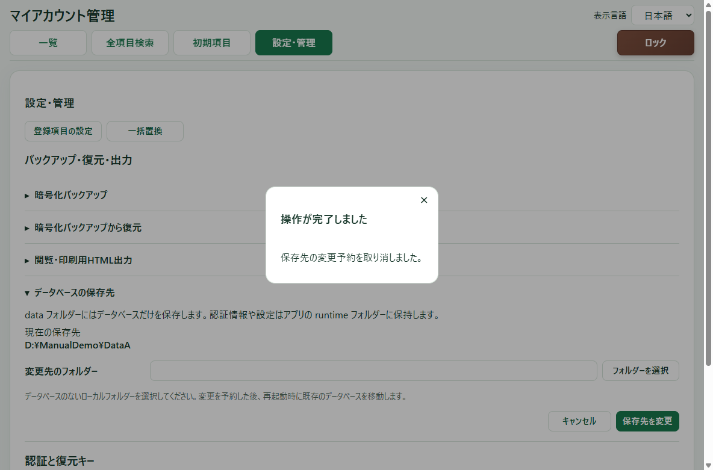
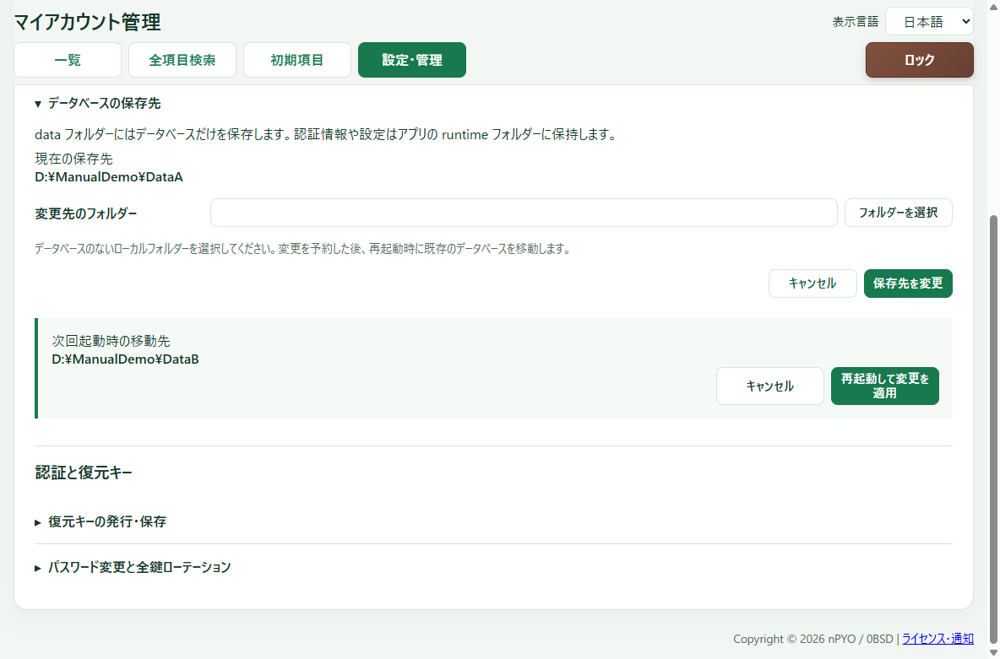
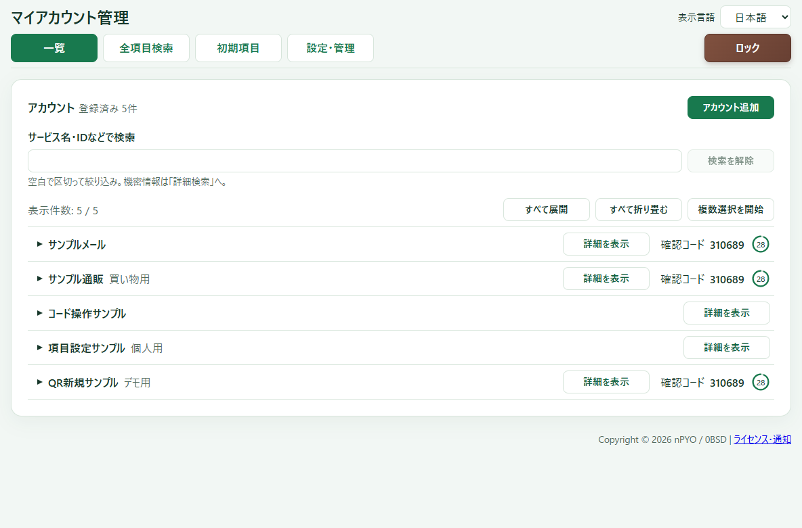

40データベースの保存先を変更
データベースの移動先を予約し、再起動して保存先を変更します。
手順一覧を開く（12手順）
移動先を予約する
1設定・管理を開く
［データベースの保存先］を開きます。

2現在の保存先を確認する
［フォルダーを選択］で、データベースのないローカルフォルダーを選びます。

3移動先のフォルダーを選ぶ
フォルダーを指定して［フォルダーの選択］を押します。例では D:\ManualDemo\DataB です。

4移動先を確認して予約する
変更先に選んだフォルダーが表示されたら［保存先を変更］を押します。例ではDataBです。

5予約完了を確認する
通知を閉じます。この段階では移動前です。

予約を取り消す
6予約を中止する場合
［次回起動時の移動先］にある［キャンセル］を押します。

7取消完了を確認する
［保存先の変更予約を取り消しました］を閉じます。

8元の保存先を確認する
予約欄が消え、現在の保存先はDataAのままです。

再起動して移動を適用する
9移動を予約し直す
再度フォルダーを選択し、［保存先を変更］を押します。

10再起動して適用する
予約通知を閉じ、移動先を確認して［再起動して変更を適用］を押します。

11登録内容を確認する
再起動後、一覧の登録内容を確認します。例では5件が維持されています。

12新しい保存先を確認する
設定・管理から保存先を開き、［現在の保存先］が移動先になったことを確認します。